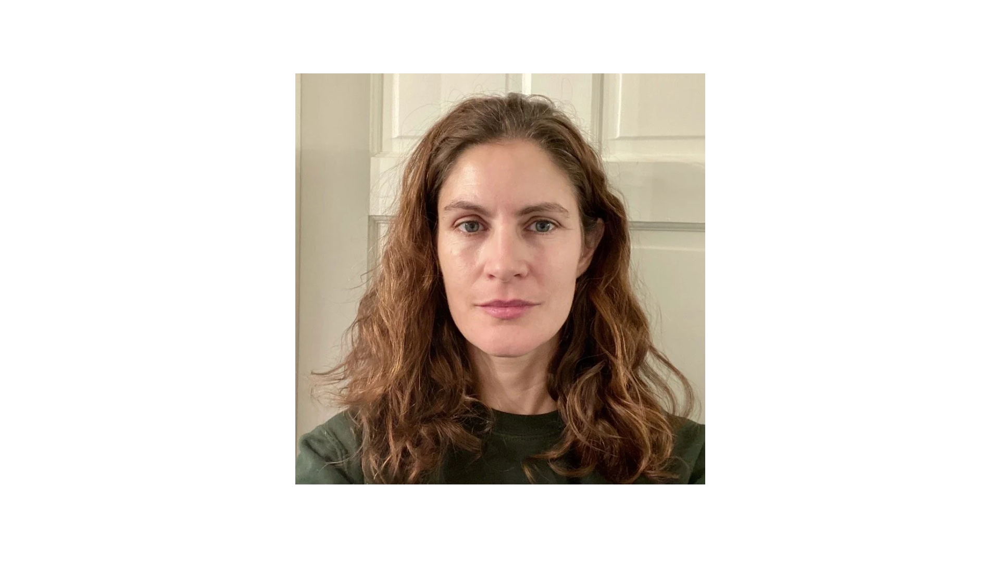

Laura Davis, OTR/L
Through my training and work as an Occupational Therapist, I have gained an in-depth understanding of mental health, neurodiversity, disability and accommodations, the nervous system, and sensory regulation. I was inspired to become an OT by the community at Zeno Mountain Farm, where I experienced the calm of being known and needed exactly as you are.
Since graduating with my Master’s in Occupational Therapy from USC in 2015, I have used evidence-based interventions to support a diverse range of children and adults. These experiences have given me a deep appreciation for the wide variety and complexity of the human experience.
My specialized interest in executive functioning emerged from personal experience; I was always told that I was smart, but I struggled my whole life to meet deadlines, read social cues, and complete seemingly simple tasks. After having children, I realized the coping skills I used to hide my inner chaos were no longer enough. I eventually sought executive functioning support, which I found so transformative that I did my own deep dive and became a certified executive functioning coach and ADHD professional.
These certifications enriched my understanding of the brain as a whole and complemented my work as an OT. I love sharing these insights and witnessing the relief that clients experience when they can shift from a place of shame to one of genuine understanding.
I also bring over 12 years of experience in improv comedy to my work. This background has taught me that focus can coexist with joy, and that a structured template can actually serve to foster greater creativity.